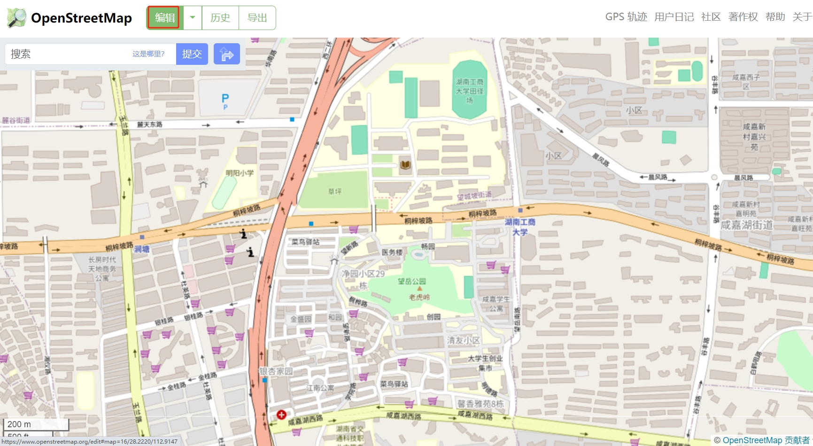
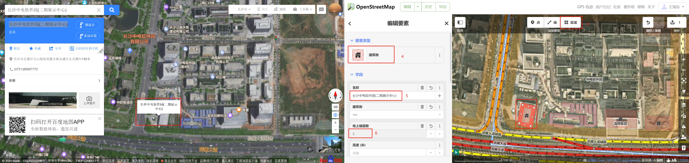
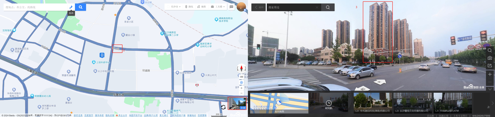

OpenStreetMap地图编辑
进入编辑页面
进入 OpenStreetMap首页 （需要科学上网），点击编辑按钮，以进入地图编辑页面（如果没有注册，请注册账号再操作）。

地图编辑
选中对需要修改的地图元素进行编辑。

对照卫星地图（比如百度地图的卫星地图）进行绘制：

通过实景地图数出楼的层数：

提交修改
点击页面保存按钮或者按Ctrl+S进行修改的保存和提交。
手机APP进行地图编辑
为了在移动环境下进行方便的地图编辑，下载手机软件StreetComplete 。